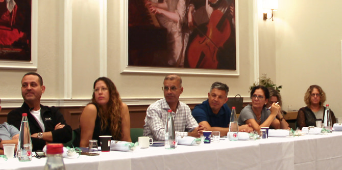
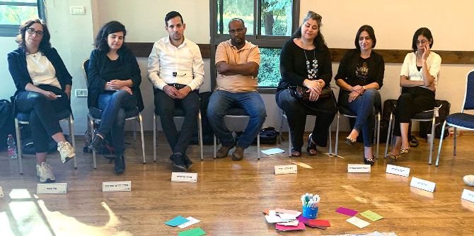

פתיחת השנה במרכז מנדל צפון טומנת בחובה תמיד התרגשות רבה, אך השנה אפילו יותר: שנת תשפ"ג תעמוד בסימן העמקת הקשר בין שלוש התוכניות ויצירת נקודות מפגש חברתיות ולימודיות ביניהן. במהלך השנה ייפגשו העמיתים מכל התוכניות באירועים משותפים, כדי להקנות לכל אחד מהם נקודות מבט נוספות ולחזק את הזיקה לצפון על-ידי היכרות אישית וחקר מעמיק.
השנה יצאה לדרך במרכז מנדל למנהיגות בצפון באמצע אוקטובר, עם סמינר בן יומיים שקיימה כל אחת מהתוכניות לעמיתים שלה. גולת הכותרת של שלושת הסמינרים היא תמיד החיבור הפותח, מעין "אני מאמין" שבו מציג כל אחד מהעמיתים לפני חבריו לתוכנית את עצמו באמצעות מניפסט קצר שגם מאפשר להכיר אותו טוב יותר וגם מספק הצצה לעולמו ולדבר שבוער בו ושמניע אותו לפעולה ביחס לצפון.
עמיתי
תוכנית מנדל למנהיגות אזורית בצפון התכנסו לסמינר בקיבוץ דפנה, ובו התמקדו בצפון בהתייחסות לציר הזמן. העבר בא לביטוי על-ידי סיור בקרית שמונה עם פרופ' אמיר גולדשטיין, ראש החוג ללימודים רב-תחומיים ולימודי מזרח אסיה במכללת תל חי. את ההווה ייצגה מיכל רייקין, שמובילה במרכז מנדל למנהיגות בצפון את לימודי הצפון, ואת העתיד – אורי אילן, מנהל התכנון במעבדה לעתיד ישראל 2048 בתנועת אור.
עמיתי תוכנית מנדל למנהיגות אזורית בצפון בטיול לאזור קרית שמונה
עמיתי
תוכנית מנדל למנהיגות בשירות הציבורי בצפון שהו במהלך הסמינר בקיבוץ כפר בלום. במסגרתו התקיימה הרצאה על בחירות נובמבר 2022 מאת ד"ר גיל טלשיר, חוקרת מדע המדינה ומרצה בכירה בחוג למדע המדינה באוניברסיטת תל אביב. ביום השני של הסמינר הציגה מיכל רייקין את מאפייני הצפון ואת האתגרים שבו, ולאחר מכן יצאו העמיתים לסיור בקרית שמונה עם פרופ' אמיר גולדשטיין בנושא פרשיות מפתח בהיסטוריה החברתית פוליטית של העיר, כמיקרוקוסמוס אזורי.

עמיתי תוכנית מנדל למנהיגות בשירות הציבורי בצפון בהצגת החיבור הפותח
תוכנית מנדל למנהיגות חברתית בצפון קיימה את הסמינר שלה בקיבוץ דליה, שם נערך מפגש מרגש בין העמיתים לבין בוגרי מחזור ה', שחלקו מחוויות הלמידה שלהם בתוכנית ופתחו צוהר להיכרות נוספת עם התהליך הלימודי שמצפה לעמיתים במהלך השנה. ביום השני לסמינר הרצה ד"ר יואב קני, אחראי לימוד אקדמי ומרצה למדעי הרוח במרכז מנדל למנהיגות בצפון, על פילוסופיה ותפקידה בחיי היומיום – מפגש שבין שמים וארץ – וכיצד למידה של רוח מאפשרת התבוננות מזווית ערכית על החברה בישראל בכלל ועל אזור הצפון בפרט.

ריטריט הפתיחה של תוכנית מנדל למנהיגות חברתית בצפון, אוקטובר 2022
אנו מאחלים לעמיתים החדשים שנה של חקר ומשמעות, של בחינת הזהות, הערכים והאחריות, שנה שבה תתוודעו אל הלא מוכר בתוככם ותפעלו ממנו לטובת עשייה חברתית ואישית.
{kind=link}
{kind=link}
{kind=link}